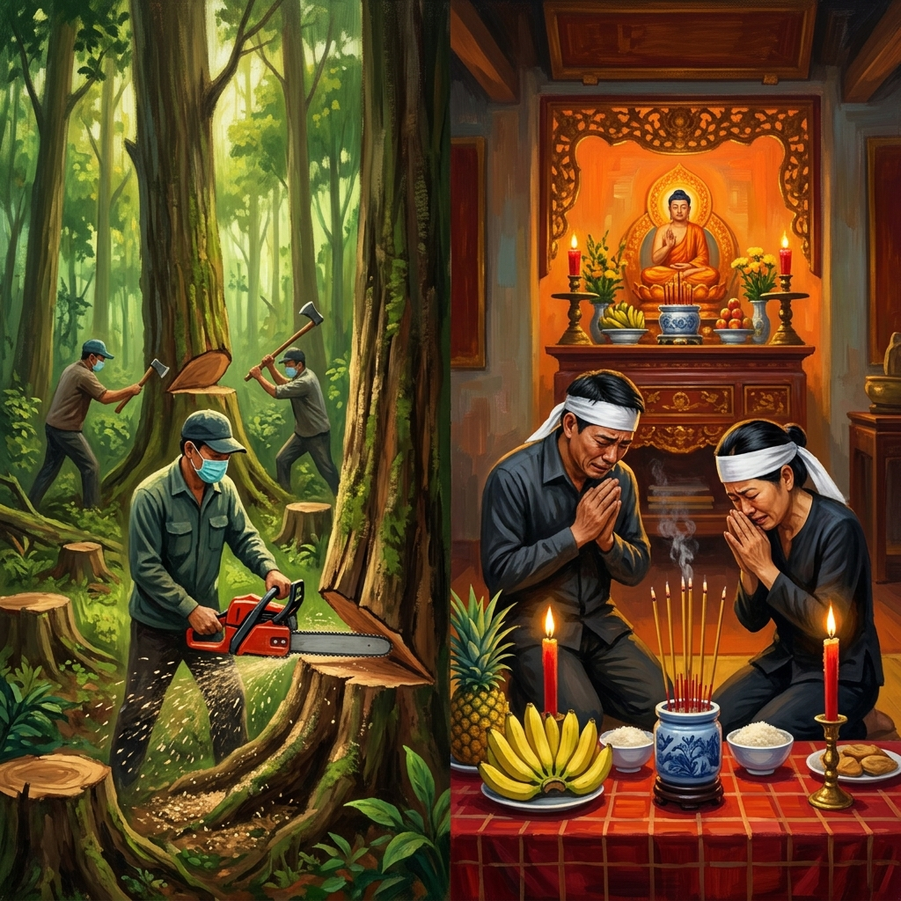
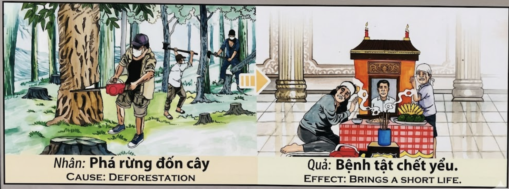

Los Anillos de la MuerteThe Rings of DeathGli Anelli della Morte死亡之年轮حلقات الموتКольца смертиDie Ringe des TodesLes Anneaux de la Mort死の年輪Os Anéis da MorteNhững Vòng Năm Của Cái Chết
Cada árbol derribado tiene tantos anillos de vida como años le fueron arrancados. El karma cuenta esos anillos y se los descuenta a quien empuñó el hacha: por cada siglo de bosque destruido, un año menos para el alma del destructor. Every felled tree holds as many rings of life as years that were torn from it. Karma counts those rings and subtracts them from the one who wielded the axe: for every century of forest destroyed, one less year for the destroyer's soul. Ogni albero abbattuto ha tanti anelli di vita quanti anni gli sono stati strappati. Il karma conta quegli anelli e li sottrae a chi impugnò l'ascia: per ogni secolo di foresta distrutta, un anno in meno per l'anima del distruttore. 每一棵被砍倒的树都有着与被夺走的年岁同样多的生命年轮。业力数着那些年轮，然后从挥斧之人的寿数中扣除：每毁灭一个世纪的森林，毁灭者的灵魂就少活一年。 لكل شجرة مقطوعة حلقات حياة بعدد السنين التي انتُزعت منها. يعدّ الكارما تلك الحلقات ويخصمها ممن حمل الفأس: عن كل قرن من الغابة المدمّرة سنة أقل لروح المدمّر. У каждого срубленного дерева столько колец жизни, сколько лет у него отняли. Карма считает эти кольца и вычитает их у того, кто держал топор: за каждый век уничтоженного леса — на год меньше для души разрушителя. Jeder gefällte Baum hat so viele Lebensringe wie Jahre, die ihm entrissen wurden. Karma zählt diese Ringe und zieht sie dem ab, der die Axt führte: Für jedes Jahrhundert zerstörten Waldes ein Jahr weniger für die Seele des Zerstörers. Chaque arbre abattu porte autant d'anneaux de vie que d'années qui lui furent arrachées. Le karma compte ces anneaux et les soustrait de celui qui maniait la hache : pour chaque siècle de forêt détruite, une année de moins pour l'âme du destructeur. 伐り倒されたすべての木には、奪われた年月と同じ数の年輪があります。カルマはその年輪を数え、斧を振るった者から差し引きます。破壊された森の一世紀につき、破壊者の魂から一年が失われるのです。 Cada árvore derrubada tem tantos anéis de vida como anos que lhe foram arrancados. O karma conta esses anéis e desconta-os a quem empunhou o machado: por cada século de floresta destruída, um ano a menos para a alma do destruidor. Mỗi cây bị đốn hạ có bao nhiêu vòng năm tuổi thọ thì bấy nhiêu năm bị giật đi. Nhân quả đếm từng vòng năm ấy rồi trừ vào người cầm rìu: cứ mỗi thế kỷ rừng bị hủy diệt, linh hồn kẻ phá hoại mất đi một năm.
Los árboles son los seres vivos más antiguos de la Tierra. Un roble puede vivir mil años; una secuoya, tres mil; un baobab guarda en su tronco la memoria de civilizaciones enteras que nacieron y murieron bajo su sombra. Cuando la motosierra muerde la corteza de un árbol centenario, no está cortando madera: está segando años de vida acumulados, siglos de oxígeno regalado, milenios de refugio ofrecido a pájaros, insectos y hombres. El karma no distingue entre los seres que respiran con pulmones y los que respiran con hojas: para la ley universal, toda la vida es una, y destruirla tiene consecuencias exactas.
El mecanismo kármico de la deforestación es de una justicia descarnada: quien arranca la vida de los árboles ve cómo la vida se le arranca a él. No mañana ni pasado: el karma puede esperar una generación, dos, diez, incluso una vida entera. Pero llega. El talador que en una mañana destroza lo que la naturaleza tardó trescientos años en construir descubrirá —en esta vida o en la siguiente— que su propio cuerpo se debilita antes de tiempo, que las enfermedades lo visitan con una frecuencia que no entiende, que sus seres queridos se apagan como velas al viento. Y un día, su familia se arrodillará ante un altar en un templo, con incienso y plátanos y velas rojas, llorando una muerte prematura cuya raíz verdadera hunde sus dedos invisibles en los tocones de un bosque que ya no existe. Los anillos del tronco cortado son los anillos que el karma le arrancó al reloj de su vida.
Trees are the oldest living beings on Earth. An oak can live a thousand years; a sequoia, three thousand; a baobab holds within its trunk the memory of entire civilizations that were born and died beneath its shade. When a chainsaw bites into the bark of a centuries-old tree, it is not cutting wood: it is reaping accumulated years of life, centuries of freely given oxygen, millennia of shelter offered to birds, insects, and humans. Karma does not distinguish between beings that breathe with lungs and those that breathe with leaves: for the universal law, all life is one, and destroying it has exact consequences.
The karmic mechanism of deforestation is of a stark justice: he who tears life from the trees will see life torn from him. Not tomorrow or the day after: karma can wait a generation, two, ten, even an entire lifetime. But it arrives. The logger who in a single morning destroys what nature took three hundred years to build will discover—in this life or the next—that his own body weakens before its time, that illness visits him with a frequency he cannot comprehend, that his loved ones are extinguished like candles in the wind. And one day, his family will kneel before a temple altar, with incense and bananas and red candles, weeping for a premature death whose true root sinks its invisible fingers into the stumps of a forest that no longer exists. The rings of the severed trunk are the rings karma tore from the clock of his life.
Gli alberi sono gli esseri viventi più antichi della Terra. Una quercia può vivere mille anni; una sequoia tremila; un baobab custodisce nel suo tronco la memoria di civiltà intere. Quando la motosega morde la corteccia di un albero secolare, non sta tagliando legno: sta mietendo anni di vita accumulati, secoli di ossigeno regalato, millenni di rifugio offerto a uccelli, insetti e uomini.
Il meccanismo karmico della deforestazione è di una giustizia spietata: chi strappa la vita agli alberi vedrà la vita strappata a sé. Il boscaiolo che in una mattina distrugge ciò che la natura ha impiegato trecento anni a costruire scoprirà che il proprio corpo si indebolisce prima del tempo, che le malattie lo visitano con una frequenza inspiegabile. E un giorno la sua famiglia si inginocchierà davanti a un altare del tempio, piangendo una morte prematura la cui vera radice affonda le dita invisibili nei ceppi di un bosco che non esiste più. Gli anelli del tronco tagliato sono gli anelli che il karma ha strappato all'orologio della sua vita.
树木是地球上最古老的生物。一棵橡树能活一千年；一棵红杉，三千年；一棵猴面包树在其躯干中保存着在其树荫下诞生和消亡的整个文明的记忆。当电锯咬入一棵百年老树的树皮时，它砍的不是木头：它在收割积累的生命年华、几个世纪无偿奉献的氧气、千年来为鸟类、昆虫和人类提供的庇护。
森林砍伐的业力机制具有赤裸裸的公正：谁从树木身上撕扯生命，就会看到生命从自己身上被撕扯走。伐木者在一个早晨摧毁自然花了三百年建造之物，他将发现——在今世或来世——自己的身体提前衰弱，疾病以他无法理解的频率造访，亲人如风中之烛般熄灭。终有一天，他的家人将跪在庙宇祭坛前，带着香火、香蕉和红烛，为一场早逝而哭泣，那早逝的真正根源将看不见的手指深深插入一片已不存在的森林的树桩之中。被截断的树干年轮，正是业力从他生命之钟上撕走的年轮。
الأشجار هي أقدم الكائنات الحية على الأرض. بلوطة قد تعيش ألف سنة؛ سكوية ثلاثة آلاف؛ باوباب يحفظ في جذعه ذاكرة حضارات كاملة. حين يعضّ المنشار في لحاء شجرة عمرها قرون، فهو لا يقطع خشباً بل يحصد سنوات حياة متراكمة وقروناً من الأكسجين المجاني.
آلية الكارما للإزالة الغابية ذات عدالة صارمة: من ينتزع الحياة من الأشجار سيُنتزَع منه. الحطاب الذي يدمر في صباح واحد ما بنته الطبيعة في ثلاثمائة سنة سيكتشف أن جسده يضعف قبل أوانه وأن أحبابه ينطفئون كشموع في الريح. يوماً ما ستركع أسرته أمام مذبح معبد بالبخور والموز والشموع الحمراء، تبكي موتاً مبكراً جذره الحقيقي يغرس أصابعه في جذوع غابة لم تعد موجودة.
Деревья — древнейшие живые существа на Земле. Дуб может прожить тысячу лет; секвойя — три тысячи; баобаб хранит в своём стволе память целых цивилизаций. Когда пила вгрызается в кору столетнего дерева, она режет не древесину — она жнёт накопленные годы жизни, столетия подаренного кислорода, тысячелетия приюта для птиц, насекомых и людей.
Кармический механизм обезлесения обнажённо справедлив: кто отнимает жизнь у деревьев, увидит, как жизнь отнимается у него. Лесоруб, уничтожающий за утро то, что природа строила триста лет, обнаружит, что его тело слабеет раньше времени, что близкие гаснут как свечи на ветру. И однажды его семья преклонит колени перед храмовым алтарём с благовониями, бананами и красными свечами, оплакивая преждевременную смерть, чьи истинные корни уходят в пни леса, которого больше нет.
Bäume sind die ältesten Lebewesen der Erde. Eine Eiche kann tausend Jahre leben; ein Mammutbaum dreitausend; ein Affenbrotbaum bewahrt in seinem Stamm die Erinnerung ganzer Zivilisationen. Wenn die Kettensäge in die Rinde eines jahrhundertealten Baumes beißt, schneidet sie kein Holz: Sie erntet angesammelte Lebensjahre, Jahrhunderte geschenkten Sauerstoffs.
Der karmische Mechanismus der Abholzung ist von nackter Gerechtigkeit: Wer dem Baum das Leben entreißt, dem wird das Leben entrissen. Der Holzfäller, der an einem Morgen zerstört, was die Natur in dreihundert Jahren aufgebaut hat, wird entdecken, dass sein Körper vorzeitig schwächer wird, dass seine Lieben wie Kerzen im Wind verlöschen. Eines Tages wird seine Familie vor einem Tempelschrein knien, mit Räucherstäbchen, Bananen und roten Kerzen, und einen vorzeitigen Tod beweinen, dessen wahre Wurzel ihre unsichtbaren Finger in die Stümpfe eines Waldes gräbt, den es nicht mehr gibt.
Les arbres sont les êtres vivants les plus anciens de la Terre. Un chêne peut vivre mille ans ; un séquoia, trois mille ; un baobab garde dans son tronc la mémoire de civilisations entières. Quand la tronçonneuse mord l'écorce d'un arbre centenaire, elle ne coupe pas du bois : elle fauche des années de vie accumulées, des siècles d'oxygène offert gratuitement.
Le mécanisme karmique de la déforestation est d'une justice nue : celui qui arrache la vie aux arbres verra la vie arrachée de lui. Le bûcheron qui détruit en un matin ce que la nature a mis trois cents ans à construire découvrira que son corps s'affaiblit avant l'heure, que ses proches s'éteignent comme des bougies au vent. Un jour, sa famille s'agenouillera devant un autel de temple, avec de l'encens, des bananes et des bougies rouges, pleurant une mort prématurée dont la véritable racine enfonce ses doigts invisibles dans les souches d'une forêt qui n'existe plus.
木は地球上で最も古い生き物です。樫の木は千年生きることができます。セコイアは三千年。バオバブはその幹の中に、その日陰で生まれ死んでいった文明全体の記憶を宿しています。チェーンソーが百年の木の樹皮に食い込むとき、それは木材を切っているのではありません。蓄積された命の年月を刈り取り、何世紀にもわたる無償の酸素を断ち切っているのです。
森林破壊のカルマの仕組みは容赦ない公正さを持っています。木から命を引き裂く者は、自分からも命が引き裂かれるのを見るでしょう。一朝で自然が三百年かけて築いたものを破壊する伐採者は、自分の体が時を待たずに弱り、愛する者が風の中の蝋燭のように消えていくことに気づくでしょう。そしてある日、家族は寺院の祭壇の前にひざまずき、線香とバナナと赤い蝋燭を供え、その真の根が存在しなくなった森の切り株に見えない指を深く差し込んでいる早すぎる死を嘆くのです。
As árvores são os seres vivos mais antigos da Terra. Um carvalho pode viver mil anos; uma sequoia, três mil; um embondeiro guarda no seu tronco a memória de civilizações inteiras. Quando a motosserra morde a casca de uma árvore centenária, não está a cortar madeira: está a ceifar anos de vida acumulados, séculos de oxigénio oferecido gratuitamente.
O mecanismo kármico da desflorestação é de uma justiça nua: quem arranca a vida às árvores verá a vida ser-lhe arrancada. O lenhador que numa manhã destrói o que a natureza demorou trezentos anos a construir descobrirá que o seu corpo enfraquece antes do tempo, que os seus entes queridos se apagam como velas ao vento. Um dia a sua família ajoelhar-se-á ante um altar de templo, com incenso, bananas e velas vermelhas, chorando uma morte prematura cuja verdadeira raiz enterra os dedos invisíveis nos tocos de uma floresta que já não existe.
Cây cối là sinh vật cổ xưa nhất trên Trái Đất. Một cây sồi có thể sống nghìn năm; một cây tùng bách ba nghìn năm; một cây bao báp giữ trong thân mình ký ức của những nền văn minh nguyên vẹn đã sinh ra và tàn lụi dưới bóng nó. Khi lưỡi cưa máy cắn vào vỏ cây trăm tuổi, nó không cắt gỗ: nó đang gặt hái những năm tháng sống tích lũy, hàng thế kỷ oxy được trao tặng miễn phí.
Cơ chế nhân quả của nạn phá rừng mang công lý trần trụi: ai giật lấy sự sống từ cây xanh sẽ thấy sự sống bị giật khỏi mình. Kẻ đốn gỗ trong một buổi sáng hủy hoại điều thiên nhiên mất ba trăm năm gây dựng sẽ nhận ra thân xác mình yếu đi trước thời, người thân tắt lịm như nến trước gió. Rồi một ngày, gia đình họ sẽ quỳ trước bàn thờ chùa, với hương trầm, chuối, dứa và nến đỏ, khóc thương cái chết yểu mà gốc rễ thực sự của nó cắm ngón tay vô hình vào những gốc cây của khu rừng đã không còn tồn tại.
El Hombre que Contó los Anillos
The Man Who Counted the Rings
L'Uomo che Contò gli Anelli
数年轮的人
الرجل الذي عدّ الحلقات
Человек, считавший кольца
Der Mann, der die Ringe zählte
L'Homme qui Compta les Anneaux
年輪を数えた男
O Homem que Contou os Anéis
Người Đàn Ông Đếm Vòng Năm
En las montañas de la Cordillera Central de Vietnam vivían tres hombres que se ganaban la vida talando árboles. El primero, Hùng, manejaba una motosierra roja con la precisión fría de quien no ve en el bosque más que dinero. El segundo, Dũng, usaba el hacha con la fuerza ciega de la costumbre. El tercero, Bảo, era el más joven y el más silencioso de los tres, y cada mañana, antes de levantar su herramienta, miraba el árbol durante un largo minuto, como si le pidiera perdón.
Un día cayó ante la motosierra de Hùng un árbol gigantesco cuyo tronco era tan ancho que tres hombres no podían abrazarlo. Cuando el coloso se derrumbó con un estruendo que hizo callar a todos los pájaros de la montaña, un monje que caminaba por el sendero cercano se detuvo y observó el tocón expuesto. Se arrodilló y comenzó a contar los anillos, pasando el dedo por cada surco como si leyera un libro sagrado. "Trescientos doce", dijo al fin. Hùng rio: "Trescientos doce anillos, trescientos doce tablones. ¡Buen negocio!" El monje lo miró con la tristeza de quien ve lo que otros no pueden y respondió: "No, hijo. Trescientos doce anillos son trescientos doce años de vida que este ser tenía todavía por delante. El mundo te los prestó, y tú se los devolviste en serrín. Alguien tendrá que pagar esa deuda."
Hùng y Dũng siguieron talando sin escuchar. Solo Bảo sintió un escalofrío. Aquella noche, plantó un árbol joven en el claro que habían dejado, regándolo con agua del arroyo. No se lo dijo a nadie. Pasaron los años. Hùng enfermó de los pulmones — esos pulmones que habían respirado un aire que los árboles ya no limpiaban — y murió joven, a los cuarenta y dos. Dũng cayó enfermo del hígado y lo siguió poco después. Sus familias se arrodillaron ante el altar del templo, con plátanos, piña, incienso en un jarrón azul y dos velas rojas, llorando muertes que no entendían. Pero Bảo, el que plantaba un árbol por cada uno que cortaba, el que pedía perdón en silencio cada mañana, vivió hasta los noventa y siete años. Y cuando murió, lo hicieron rodeado por un bosque que él mismo había replantado, un bosque joven que ya daba sombra y fruta, y cuyos anillos — uno por cada año de la nueva vida que Bảo les había regalado — eran exactamente los mismos anillos que el karma le sumó a su propio reloj.
In the mountains of Vietnam's Central Highlands lived three men who made their living felling trees. The first, Hùng, handled a red chainsaw with the cold precision of one who sees nothing in the forest but money. The second, Dũng, swung his axe with the blind force of habit. The third, Bảo, was the youngest and the quietest, and every morning before raising his tool, he would gaze at the tree for a long minute, as if asking its forgiveness.
One day a gigantic tree fell before Hùng's chainsaw, its trunk so wide that three men could not embrace it. When the colossus crashed with a thunder that silenced every bird on the mountain, a monk walking along the nearby path stopped and examined the exposed stump. He knelt and began counting the rings, running his finger along each groove as if reading a sacred book. "Three hundred and twelve," he said at last. Hùng laughed: "Three hundred twelve rings, three hundred twelve planks. Good business!" The monk looked at him with the sadness of one who sees what others cannot and replied: "No, my son. Three hundred twelve rings are three hundred twelve years of life this being still had ahead. The world lent them to you, and you returned them as sawdust. Someone will have to pay that debt."
Hùng and Dũng kept felling without listening. Only Bảo felt a shiver. That night, he planted a young tree in the clearing they had left, watering it with water from the stream. He told no one. Years passed. Hùng fell ill with a lung disease—those lungs that had breathed air the trees no longer cleaned—and died young, at forty-two. Dũng fell ill with liver disease and followed shortly after. Their families knelt before the temple altar, with bananas, pineapple, incense in a blue vase and two red candles, mourning deaths they could not understand. But Bảo, who planted a tree for every one he cut, who asked forgiveness in silence each morning, lived to ninety-seven. And when he died, he did so surrounded by a forest he himself had replanted—a young forest that already gave shade and fruit, whose rings—one for every year of new life Bảo had given them—were exactly the same rings karma added to his own clock.
Nelle montagne dell'Altopiano Centrale del Vietnam vivevano tre uomini che si guadagnavano da vivere abbattendo alberi. Il primo, Hùng, maneggiava una motosega rossa con la fredda precisione di chi nel bosco vede solo denaro. Il secondo, Dũng, usava l'ascia con la forza cieca dell'abitudine. Il terzo, Bảo, il più giovane e silenzioso, ogni mattina guardava l'albero per un lungo minuto prima di alzare lo strumento, come a chiedergli perdono.
Un giorno cadde un albero gigantesco. Un monaco contò gli anelli del ceppo: "Trecentododici." Hùng rise: "Trecentododici tavole!" Il monaco rispose: "No, figlio. Trecentododici anni di vita che questo essere aveva ancora davanti. Il mondo te li ha prestati, e tu li hai restituiti in segatura. Qualcuno dovrà saldare quel debito."
Hùng morì a quarantadue anni di malattia ai polmoni. Dũng lo seguì poco dopo. Le famiglie piansero davanti all'altare del tempio con incenso e candele rosse. Ma Bảo, che piantava un albero per ogni albero abbattuto, visse fino a novantasette anni, circondato dal bosco che lui stesso aveva ripiantato — e i cui anelli erano esattamente gli anelli che il karma aggiunse al suo orologio.
在越南中央高原的山区，住着三个以伐木为生的男人。第一个叫雄，他用一把红色电锯，以冷冰冰的精准操作——在他眼里，森林不过是钞票。第二个叫勇，用斧头盲目地劈砍。第三个叫宝，最年轻也最安静，每天早上举起工具前，都要凝视那棵树整整一分钟，仿佛在请求它的原谅。
一天，雄的电锯前倒下了一棵巨树。一位僧人数了树桩上的年轮："三百一十二。"雄笑道："三百一十二块木板！好买卖！"僧人看着他："不，孩子。三百一十二个年轮是这个生灵仍有的三百一十二年寿命。世界把它们借给了你，你却以锯末归还。总有人要偿还这笔债。"
雄四十二岁死于肺病。勇随后也病逝。两家人跪在庙里祭坛前，摆着香蕉、菠萝、蓝色瓷瓶里的香和红蜡烛，哭泣着他们无法理解的早逝。但每砍一棵树就种一棵树的宝，活到了九十七岁。他去世时，身边环绕着他自己重新种植的森林——那些年轻树木的年轮，正是业力加到他生命之钟上的年轮。
في جبال المرتفعات الوسطى بفيتنام عاش ثلاثة رجال يقطعون الأشجار. الأول هونغ بمنشاره الأحمر البارد. الثاني دونغ بفأسه العمياء. الثالث باو، الأصغر والأهدأ، كان ينظر إلى الشجرة دقيقة طويلة قبل أن يرفع أداته، كأنه يستأذنها.
يوماً ما سقطت شجرة عملاقة. عدّ راهب حلقاتها: "ثلاثمائة واثنتا عشرة." ضحك هونغ: "لوح لكل حلقة!" أجاب الراهب: "لا يا بني. ثلاثمائة واثنتا عشرة سنة حياة كانت لا تزال أمام هذا الكائن. العالم أعارك إياها وأنت أعدتها نشارة. سيتعين على أحد أن يدفع ذلك الدين."
مات هونغ بمرض رئوي في الثانية والأربعين. تبعه دونغ بعد قليل. ركعت أسرتاهما أمام مذبح المعبد بالبخور والموز والشموع الحمراء. لكن باو الذي كان يغرس شجرة عن كل شجرة يقطعها عاش حتى السابعة والتسعين — وحين مات كان محاطاً بغابة أعاد زرعها بنفسه، حلقاتها هي ذاتها التي أضافها الكارما لساعة عمره.
В горах Центрального нагорья Вьетнама жили трое мужчин, зарабатывавших на жизнь рубкой леса. Первый, Хунг, орудовал красной бензопилой с холодной точностью того, кто видит в лесу лишь деньги. Второй, Зунг, рубил топором по слепой привычке. Третий, Бао, самый молодой и тихий, каждое утро долго смотрел на дерево, прежде чем поднять инструмент, словно прося прощения.
Однажды рухнуло огромное дерево. Монах сосчитал кольца на пне: «Триста двенадцать». Хунг засмеялся: «Триста двенадцать досок!» Монах посмотрел на него: «Нет, сынок. Триста двенадцать колец — это триста двенадцать лет жизни, которые это существо ещё могло прожить. Мир одолжил их тебе, а ты вернул их опилками. Кому-то придётся заплатить этот долг».
Хунг умер от болезни лёгких в сорок два. Зунг последовал вскоре. Их семьи стояли на коленях перед храмовым алтарём с благовониями и красными свечами. Но Бао, сажавший дерево за каждое срубленное, прожил до девяноста семи — окружённый лесом, который сам восстановил, чьи кольца были теми самыми кольцами, что карма прибавила к его часам.
In den Bergen des zentralen Hochlands von Vietnam lebten drei Männer, die vom Baumfällen lebten. Der erste, Hùng, führte eine rote Kettensäge mit der kalten Präzision eines Mannes, der im Wald nur Geld sieht. Der zweite, Dũng, schwang die Axt mit der blinden Kraft der Gewohnheit. Der dritte, Bảo, der jüngste und stillste, blickte jeden Morgen den Baum einen langen Moment an, bevor er sein Werkzeug hob, als bäte er um Vergebung.
Eines Tages fiel ein gewaltiger Baum. Ein Mönch zählte die Ringe des Stumpfes: „Dreihundertzwölf." Hùng lachte: „Dreihundertzwölf Bretter!" Der Mönch antwortete: „Nein, mein Sohn. Dreihundertzwölf Jahre Leben, die dieses Wesen noch vor sich hatte. Die Welt hat sie dir geliehen, und du hast sie als Sägemehl zurückgegeben. Jemand wird diese Schuld bezahlen müssen."
Hùng starb mit zweiundvierzig an einer Lungenkrankheit. Dũng folgte kurz darauf. Ihre Familien knieten vor dem Tempelschrein mit Räucherstäbchen und roten Kerzen. Aber Bảo, der für jeden gefällten Baum einen neuen pflanzte, wurde siebenundneunzig — umgeben vom Wald, den er selbst wieder aufgeforstet hatte, dessen Ringe genau jene Ringe waren, die Karma seiner Lebensuhr hinzufügte.
Dans les montagnes des Hauts Plateaux du Centre du Vietnam vivaient trois hommes qui gagnaient leur vie en abattant des arbres. Le premier, Hùng, maniait une tronçonneuse rouge avec la froide précision de celui qui ne voit dans la forêt que de l'argent. Le deuxième, Dũng, frappait de sa hache avec la force aveugle de l'habitude. Le troisième, Bảo, le plus jeune et le plus silencieux, regardait l'arbre une longue minute chaque matin avant de lever son outil, comme pour demander pardon.
Un jour tomba un arbre gigantesque. Un moine compta les anneaux de la souche : « Trois cent douze. » Hùng rit : « Trois cent douze planches ! » Le moine répondit : « Non, mon fils. Trois cent douze années de vie que cet être avait encore devant lui. Le monde te les a prêtées, et tu les as rendues en sciure. Quelqu'un devra payer cette dette. »
Hùng mourut à quarante-deux ans d'une maladie pulmonaire. Dũng le suivit peu après. Leurs familles s'agenouillèrent devant l'autel du temple avec de l'encens et des bougies rouges. Mais Bảo, qui plantait un arbre pour chaque arbre abattu, vécut jusqu'à quatre-vingt-dix-sept ans — entouré de la forêt qu'il avait lui-même replantée, dont les anneaux étaient exactement ceux que le karma ajouta à son horloge.
ベトナム中央高原の山々に、木を伐って生計を立てる三人の男がいました。最初のフンは、森に金しか見ない冷たい正確さで赤いチェーンソーを操りました。二番目のズンは、盲目的な習慣の力で斧を振りました。三番目のバオは最も若く最も静かで、毎朝道具を持ち上げる前に、許しを請うかのように長い一分間木を見つめていました。
ある日、巨大な木が倒れました。一人の僧侶が切り株の年輪を数えました。「三百十二。」フンは笑いました。「三百十二枚の板だ！」僧侶は答えました。「いいえ、息子よ。三百十二の年輪は、この存在がまだ持っていた三百十二年の命です。世界がそれを貸し、あなたはおが屑で返したのです。誰かがその借りを払わなければなりません。」
フンは四十二歳で肺の病で亡くなりました。ズンもすぐに続きました。家族たちは線香と赤い蝋燭を供えた寺院の祭壇の前にひざまずきました。しかし、伐った木ごとに一本の木を植えていたバオは九十七歳まで生きました。彼が亡くなったとき、自ら植え直した森に囲まれていました。その若い森の年輪は、カルマが彼の命の時計に加えたまさにその年輪でした。
Nas montanhas do Planalto Central do Vietname viviam três homens que ganhavam a vida a abater árvores. O primeiro, Hùng, manejava uma motosserra vermelha com a frieza de quem só vê dinheiro na floresta. O segundo, Dũng, brandia o machado com a força cega do hábito. O terceiro, Bảo, o mais novo e silencioso, olhava a árvore durante um longo minuto antes de erguer a ferramenta, como a pedir perdão.
Um dia caiu uma árvore gigantesca. Um monge contou os anéis do toco: "Trezentos e doze." Hùng riu-se: "Trezentas e doze tábuas!" O monge respondeu: "Não, filho. Trezentos e doze anos de vida que este ser ainda tinha pela frente. O mundo emprestou-tos, e tu devolveste-os em serrim. Alguém terá de pagar essa dívida."
Hùng morreu de doença pulmonar aos quarenta e dois anos. Dũng seguiu-o pouco depois. As famílias ajoelharam-se ante o altar do templo com incenso e velas vermelhas. Mas Bảo, que plantava uma árvore por cada uma que cortava, viveu até aos noventa e sete — rodeado pela floresta que ele próprio replantara, cujos anéis eram exactamente os anéis que o karma somou ao seu relógio.
Trên vùng cao nguyên Trung phần Việt Nam, có ba người đàn ông sống bằng nghề đốn cây. Người thứ nhất, Hùng, cầm cưa máy đỏ với sự chính xác lạnh lùng của kẻ chỉ thấy tiền trong rừng. Người thứ hai, Dũng, vung rìu theo thói quen mù quáng. Người thứ ba, Bảo, trẻ nhất và trầm lặng nhất, mỗi sáng trước khi giơ dụng cụ, anh nhìn cái cây suốt một phút dài, như thể xin nó tha thứ.
Một ngày, một cây khổng lồ đổ xuống trước cưa của Hùng. Một nhà sư trên đường đi ngang dừng lại đếm các vòng năm trên gốc cây: "Ba trăm mười hai." Hùng cười lớn: "Ba trăm mười hai tấm ván! Buôn may bán đắt!" Nhà sư nhìn anh ta bằng đôi mắt buồn bã: "Không, con ơi. Ba trăm mười hai vòng năm là ba trăm mười hai năm tuổi thọ sinh linh này còn phía trước. Thế gian cho con mượn, con trả lại bằng mùn cưa. Ai đó sẽ phải trả món nợ đó."
Hùng chết vì bệnh phổi năm bốn mươi hai tuổi. Dũng theo sau chẳng bao lâu. Gia đình hai người quỳ trước bàn thờ chùa, bày chuối, dứa, nhang cắm trong bình gốm xanh và hai cây nến đỏ, khóc thương những cái chết mà họ không hiểu nổi. Nhưng Bảo — người trồng một cây cho mỗi cây anh đốn, người thầm thì xin tha thứ mỗi buổi sáng — sống đến chín mươi bảy tuổi. Khi anh nhắm mắt, xung quanh là khu rừng anh tự tay trồng lại — khu rừng non đã cho bóng mát và trái ngọt, và mỗi vòng năm của nó — từng vòng cho mỗi năm cuộc sống mới mà Bảo đã trao — chính xác là những vòng năm nhân quả cộng thêm vào đồng hồ sinh mệnh của anh.

La Inspiración Original
The Original Inspiration
Nguồn cảm hứng ban đầu
La historia que hemos relatado en este capítulo está inspirada por el pasaje de la escena original de los murales «Tranh Nhân Quả» (Ilustraciones del Karma) del Templo Linh Ung en Da Nang, capturado en la imagen.
The story we have told in this chapter is inspired by the passage from the original scene of the "Tranh Nhân Quả" (Illustrations of Karma) murals of the Linh Ung Temple in Da Nang, captured in the image.
Câu chuyện chúng tôi kể trong chương này được lấy cảm hứng từ đoạn trích từ cảnh gốc của bức tranh tường "Tranh Nhân Quả" ở chùa Linh Ứng ở Đà Nẵng, được ghi lại trong hình ảnh.

Como se puede apreciar en el pasaje extraído del mural, la causa y su efecto kármico están descritos originalmente en vietnamita y con una breve traducción al inglés. A continuación, su traducción en los distintos idiomas:
As can be seen in the passage taken from the mural, the cause and its karmic effect are originally described in Vietnamese and with a brief translation into English. Below, its translation in the different languages:
🇻🇳 Tiếng Việt:
Nhân: Phá rừng đốn cây.
Quả: Bệnh tật chết yếu.
🇬🇧 English:
Cause: Deforestation.
Effect: Brings a short life.
Traducción Recreada:
Causa: Talar árboles y destruir los bosques.
Efecto: Enfermedades, debilidad y muerte prematura.
Recreated Translation:
Cause: Cutting trees and destroying forests.
Effect: Illness, weakness, and premature death.
Traduzione ricreata:
Causa: Abbattere alberi e distruggere le foreste.
Effetto: Malattie, debolezza e morte prematura.
重新创建的翻译:
原因：砍伐树木，毁坏森林。
影响：疾病、虚弱和早逝。
الترجمة المعاد صياغتها:
السبب: قطع الأشجار وتدمير الغابات.
الأثر: الأمراض والضعف والموت المبكر.
Воссозданный перевод:
Причина: Рубка деревьев и уничтожение лесов.
Следствие: Болезни, слабость и преждевременная смерть.
Neu erstellte Übersetzung:
Ursache: Bäume fällen und Wälder zerstören.
Wirkung: Krankheiten, Schwäche und vorzeitiger Tod.
Traduction recréée:
Cause : Abattre des arbres et détruire les forêts.
Effet : Maladies, faiblesse et mort prématurée.
再作成された翻訳:
原因：木を伐り、森を破壊すること。
影響：病気、衰弱、そして早すぎる死。
Tradução recriada:
Causa: Abater árvores e destruir florestas.
Efeito: Doenças, fraqueza e morte prematura.